ଳ My likes
These are my fandoms or concepts I'm interested in. I'll share a few words in here with some while others will have their own page in the future.
ଳ Grunge & Fairycore
I'm all about faeries and anything fantasy themed, so it's no wonder I find joy in feeling like a little fairy annoying people and making chaos. For the grunge I like the disregarded aspect of it, it's like a cool lazy vibe you get me? While I enjoy both of them on their own, I like to try and combine them (specially as grunge is more of a streets friendly aesthetic to go by, at least for where I live). Grunge fairycore is what I would say a revelious fairy would dress like, and that's totally my vibe!
Here are some inspirations I've taken from pinterest. Like the mayority of things taken from pinterest, I don't know all these people so I can't give credit to every image. I you happen to know one that isn't properly linked, please let me know so I can add it!


ଳ The backrooms
Back in the day when the backrooms where a thing... lol. No seriously, I really like the concept of the backrooms and i feel it hasn't been properly exploited enough. Everyone took the most basic thing of it (the terror part) and made the fastest videogame they could before the hype would go down. Although there are some cool games that are lined more into the liminality of the backrooms rather than running for your life from random entities.
Still and in every piece of content I've seen, all the protagonist of the backrooms seem odly normal about them, like "yeah, I'm in the middle of an endless subterranean pool with no one but myself. I don't know how I got here nor how to get out. A normal sunday morning for me" Up until now I haven't crossed someone who explored how being in the backrooms would affect the human brain, yes people explained the feeling of liminality and why a place with such characteristics feels off to us. But what I mean is a further exploration, how the loneliness, the hunger, the constant feeling of being observed, and later on finding out that feeling was real and in some places there are beings actually hunting you down, would make a perfectly normal person irrecognizable.
I can easily see a first person videogame where the protagonist is stuck in the rooms, finding remains of old explorers and pieces of information such as tapes or documents trying to put some sense into that place. How they would feel threatened and scared but relaxing after not finding nothig specially dangerous... until they do. they would have allucinations and way too lucid dreams of escaping or finding someone, only to be met with deception over and over again until it becomes unberarable.
THAT is the exploration I wanna see. You see the vision? How cool could that be? It could be a unreliable protagonist like book too. If no one do it in the future I might have to take matters in my own hands.
ଳ Kpop
I quite like kpop, from 3rd gen to the actual one (I think is 5 gen already, god I'm old), yet my favs and the ones I listen to the most are from 4rd gen.
Back in 2020 I would be really be into it. I remember I was on vacation right before Covid and quarantene started (we barely made it back to the country as planned, but that's a story for another day) and while I was listening to music I came across an MV that catched my eye. The MV in question was "Answer" by ATEEZ. I loved the song and went to their profile to listen some more, I liked all of them so I started to follow the group; the rest is story. Thanks to the pandemic, like many others, I had too much time at hand which helped to get me into the kpop world. I would spend my days watching youtube videos of funny moments, streaming certain MVs to gain views, vote and follow up with the almost daily content the groups had to offer.
But all good things come to an end, well not entirely. The hype lasted around 2 years or so before it gradually flowed down. Nowadays I still listen to kpop, but it isn't my main genre anymore and I'm nowhere near as invested as I was back then. I'm not up to date with whatever is happening in the kpop world nor the life of the idols I liked, but always smile whenever I hear or come across something about them.
Among the groups I listened to the most, and in consecuence followed, were ATEEZ (my favs to this day), Dreamcatcher (I know, don't touch me ;-;), One Us, Mamamoo and a bit of Stray Kids and Everglow. I listened to a ton more other groups, but those were the main ones.
ଳ Survival Games
I'm a chicken, but for some reason I love survival games. I think I enjoy how you have to work and fight your way to greateness, to gather resourses and explore and ultimatelly survive in a world that wants you dead. In short, I like the challenge, that however doesn't make me any braver.
I've tried many survivals over the years, most of them mobile since I couldn't get a competent PC until recently. My favs are Minecraft (what a surprice honestly), Subnautica, Day R (a mobile one settled in the demise of the URSS), Oxygen not included (It could be catalogued more of a base builder tho) and I'm slowly getting into Terraria.
ଳ Farming Games
I'm just a girl and since I was a tiny smurf roaming the world I enjoyed three types of online games: Games that included animals of some sort, plataformers and farming games. I recall going into "Juegosparachicas.com" (Games for girls.com) and playing Wonderful farm, Farm Frenzy, Farm Mania among others.
That fascination over farm-like games keeps on to this day, the ones I currently enjoy are Stardew Valley, Dinkum and Slime Rancher 1 & 2. I've platinum Slime Rancher 1 and I'm on my slowly (very slowly) way of doing so with Stardew Valley. I got my eye on Fields of Mistria, My time at Sanrock, Palia and Coral Island!
ଳ Marvel
Marvel has always taken a huge part of the media I consumed, mostly around 2010 - 2019. Sadly, after Avengers:Endgame and the finale of the Infinity Saga, I just couldn't get back to Marvel with the same excitement as before. Sure I watched the first season of the Loki, WandaVision and Falcon and the Winter Soldier, as well as saw the first movies that continued (loved how they dealt with Spiderman and the finale they gave him, it's a rasonable explanation as why we won't see him anymore). Whoever it started to feel more like a chore than an actual intrigue to see what would happen next, like I've done this for a decade, I was used to do this and couldn't comprehend (or accept) that maybe I wasn't that into it anymore.
By the time the Thunderbolts came out everyone says they're slowly getting back to Marvel, but for my part I saw the movie and while I enjoyed, it didn't strike that excitement flame that everyone is talking about. I still have faith that maybe a little further into the Doom Saga I'll get into it full force like before, because deep down I too want to be a fan again. I'll have to wait and prepare myself to accept that maybe that day will never come and I'll just be a fan of the comics and the Infinite Saga.
I'm team Iron man (both comics and movies), and my fav characters from the movies are Loki, Iron Man, Okoye, Star Lord and Dr. Strange (Imagine my sadness). As for the comics I love Deadpool, Hawkeye, Nightcrawler, Iron Man again, Dr. Strange again and Spiderman.


 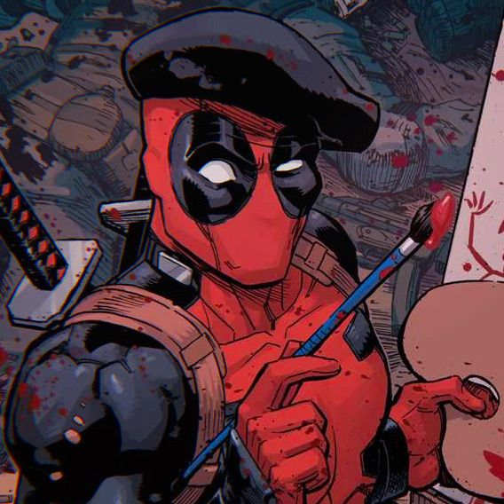
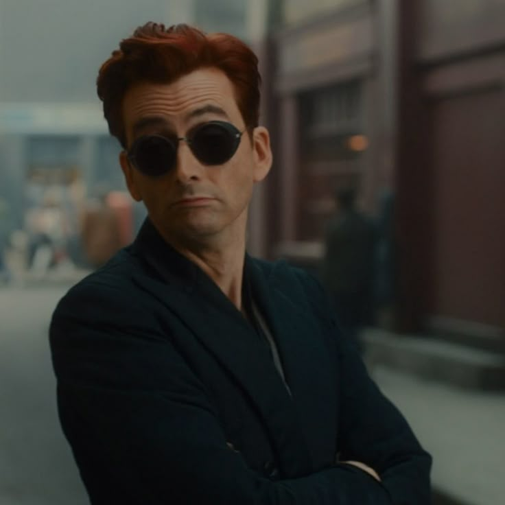
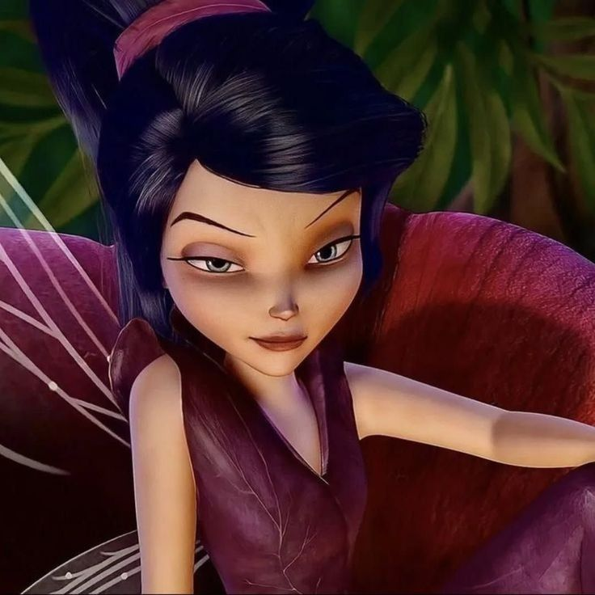
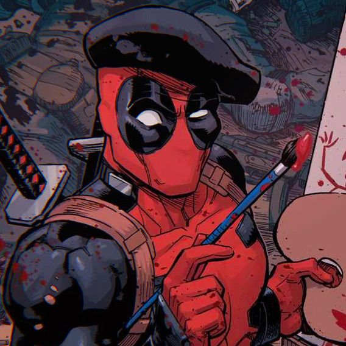
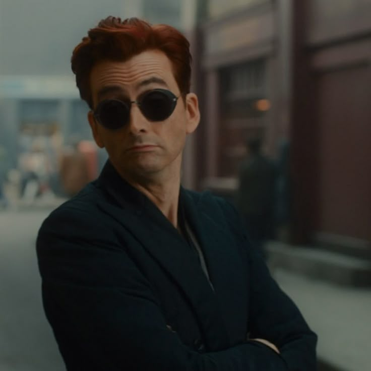
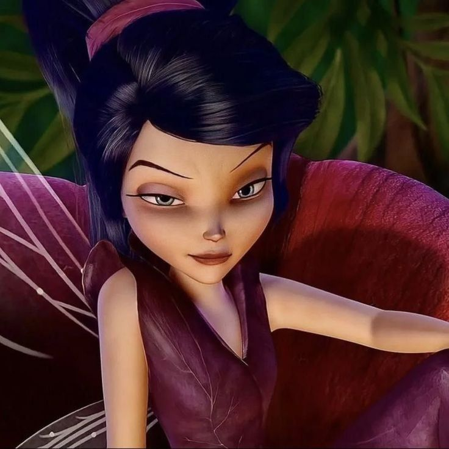


 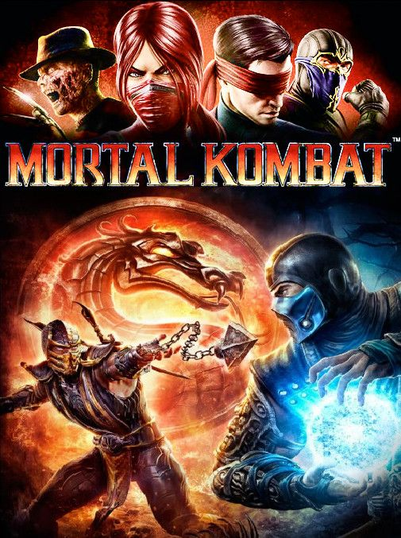
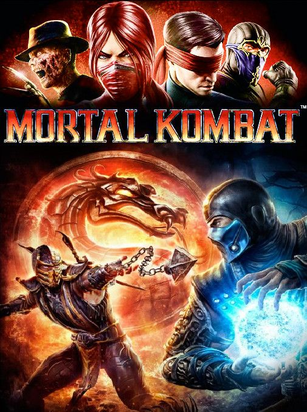
 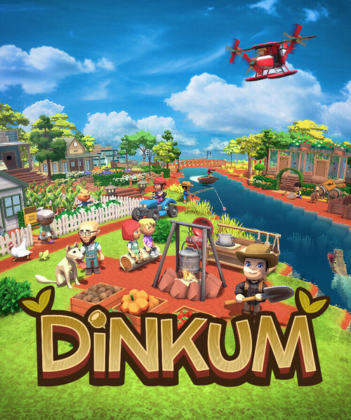
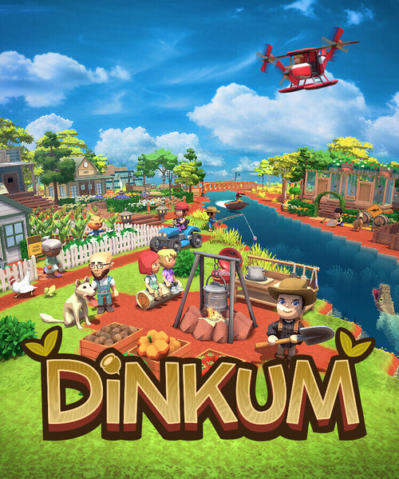


.jpg)


.jpg)
.jpg)
 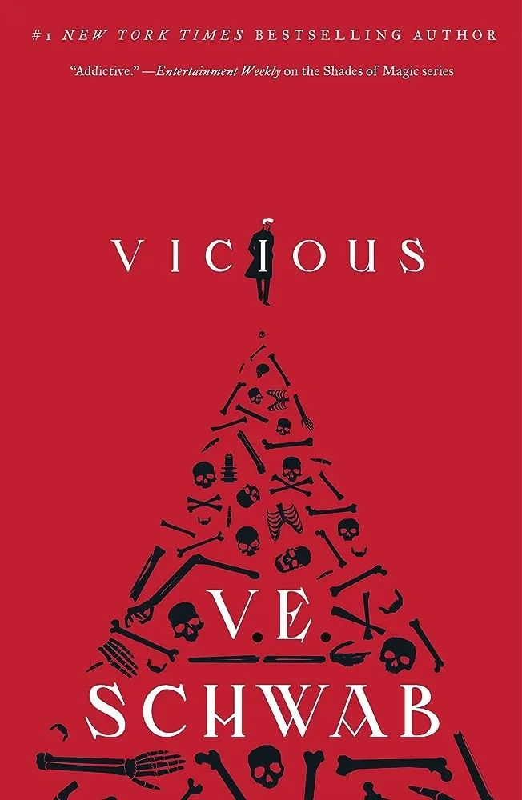
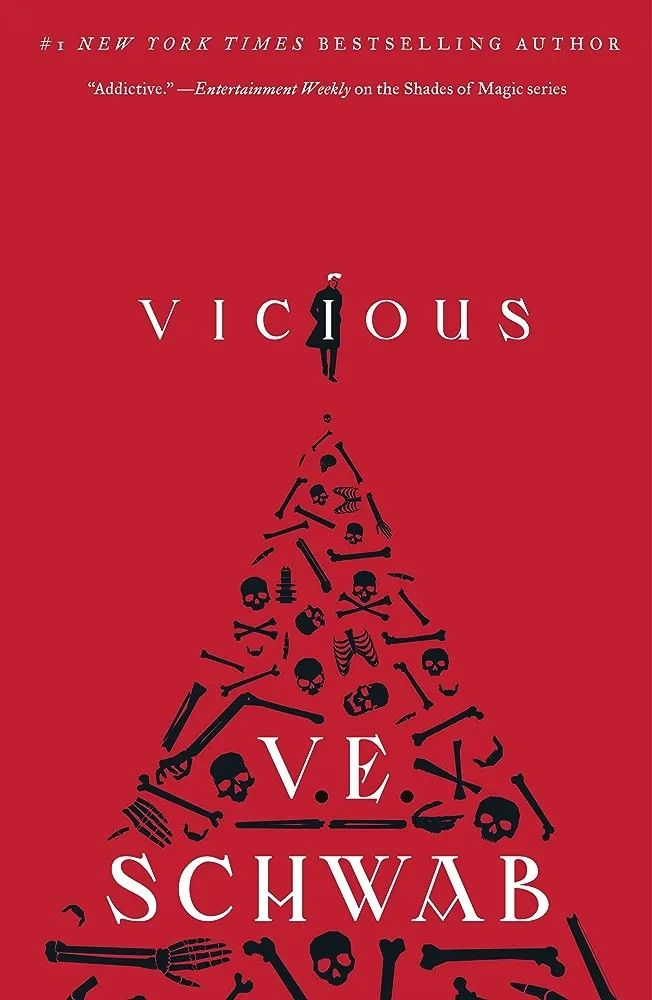

.jpg)